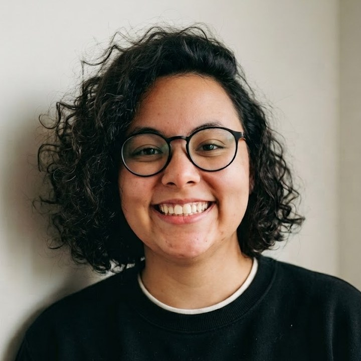

About
Design Lead at Venturus. I lead design systems, design operations and people, and for more than 15 years I’ve designed for education and engineering.
I taught myself design in the suburbs of Rio de Janeiro, and the degrees came later. I went from freelance web design to leading design systems for education and engineering products.
Along the way, I discovered how much I love helping people grow. I’ve led a team of 3 designers and mentored 5 more across systems: reviewing their work, giving clear and actionable feedback, and training the teams that use the systems we build.
Outside of work, I love cooking, photography, walks in nature, a good cup of coffee, and discovering new places. And yes, I’m a cat person. My biggest dream is to see as much of the world as I can, one place at a time.
Areas of expertise
Languages: Portuguese (native) · English (C2)

My process isn’t a fixed recipe, but most projects move through these eight phases, and I loop back whenever one of them teaches me something. Pick one to see what I do in it, what it produces, and where it shows up in my projects.
See it in practice: Utility Belt · Custom Table DataViz
Over the years, I’ve grown alongside the tools I use. From building component libraries in Sketch and Figma to editing videos, redrawing images, and finding ways to make things work in tools never meant for design (yes, even Microsoft Word), working in online education taught me to be resourceful and adapt to almost anything.
These days, code is one of my favorite ways to explore ideas. Through prototyping with code and AI-assisted development, I can experiment freely, test concepts, and bring ideas to life in ways that weren’t always possible before. For me, tools are just a means to create, and I’m always up for finding a new way to make something happen.